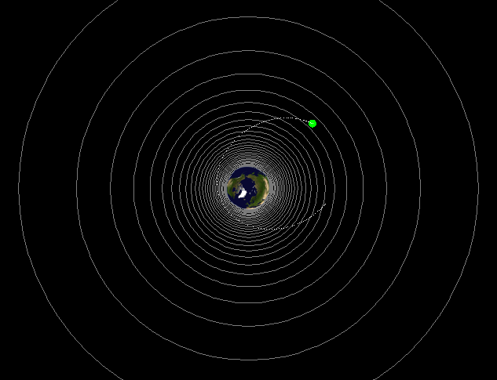

Astronomy with Processing
Welcome to a learning source for astronomy designed for A2 students studying the unit Rise and Fall of the Clockwork Universe. Contained are simulations relevant to the course, each has their own background physics articles, user manual and a FAQ section. Click on the simulation name to access it.
Click here to access the troubleshoot section.
Planetary Orbit
| This simulation simulates planets orbiting the sun and it explains about circular motion and how it is used to derive one of Kepler's law. |  |
Satellite Manoeuvres
| This simulation simulates satellites being affected by the Earth's gravitational field and derives equations for gravitational force, field strength and potential. |  |
Doppler Shift
| This simulation simulates electromagnetic waves being emitted from a moving source and derives equations for the Doppler Shift. |  |
Troubleshoot
-
The simulation animation is distorted when I scroll up and down the page.
- Try refreshing the page by clicking on the refresh button on your web browser.
- If the problem still occurs, use the stand-alone version of the simulation. You can use it by clicking on the 'stand alone version' text on the top of each simulation.
-
The simulation is slow.
- Your computer may not be fast enough to run the simulation, use a different computer.
-
The simulation won't display.
- Try refreshing the page by clicking on the refresh button on your web browser.
- The web server maybe busy, try again later.
- Your browser may have blocked Java.
If you see this message...

you either don't have Java or your browser refuses to run the simulation.
Click here to download the latest Java software if your computer does not have Java.
However if you see this message when you are using Internet Explorer...

your computer is refusing to run the simulation. Click on it for options and click on “Allow blocked content” to run the simulation as shown below.

This system was made by Sherman Ip using Processing for the COMP4 project in 2010.